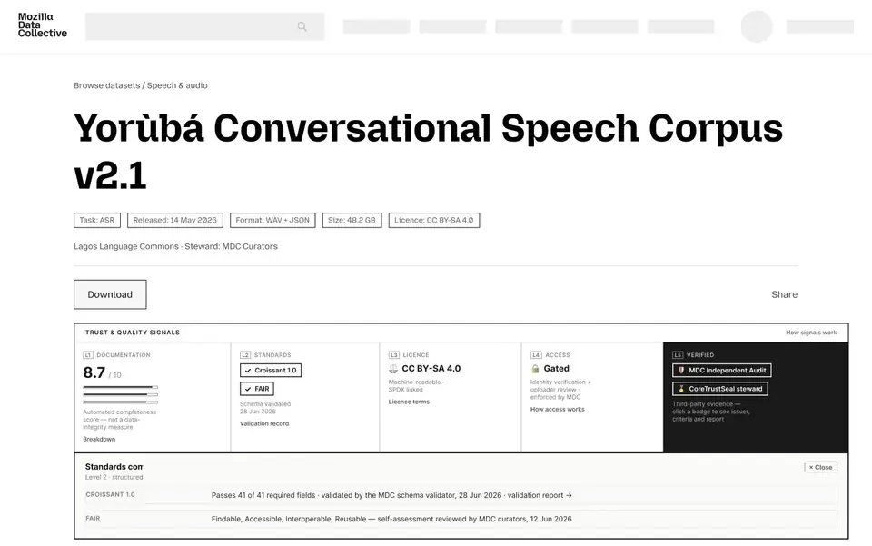
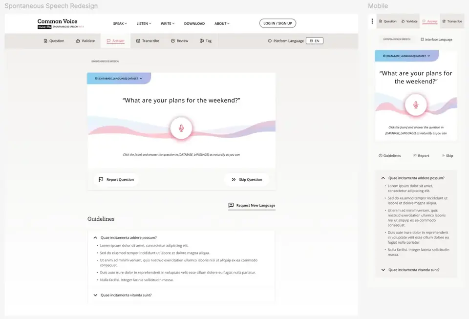
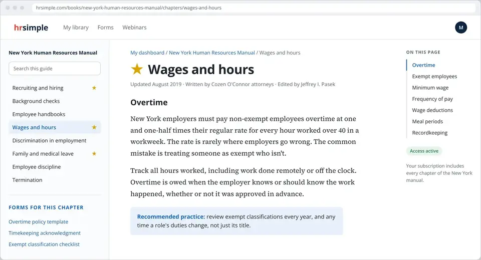

Hi, I'm Justin, a UX designer who brings systems thinking and strategy to complex products.
I work where the hard parts live: data governance, payments, and workflows that cross many teams. I map how the work really flows, turn it into product strategy, and test it at every stage: generative to find the problem, formative to shape the answer, and summative to prove it worked. Ten years across enterprise tech, education, HR, and open-source AI, usually in the middle of product, engineering, and the business.
Designing the next phase of an ethical data platform
I designed the next phase of Mozilla Data Collective: the site architecture, access controls that let data owners decide who gets in, quality signals buyers can check, and a services marketplace. Pricing research across 200+ datasets, a survey, and a false door validated what people would pay before anything was built.
Built with Claude Code + Figma MCP. Zero hand-placed pixels.The architecture and flows for 600+ datasets from 190+ vetted organizations in 300+ languages. Request to Access launched in May 2026.

Fixing bad voice data before it's recorded
Spontaneous Speech records unscripted answers in dozens of languages. Research showed where bad clips came from: the wrong language and badly timed recordings. I designed both out at the moment of recording.
Shipped as Spontaneous Speech 1.0 in 58 languages. By release 2.0 it covered 62 language datasets, with 357+ hours of unscripted speech collected.

Making employment law readable, and worth paying for
State employment-law manuals like the New York Human Resources Manual, for buyers with one urgent question. As the only designer and developer for eight years, I designed the path from a search result to a paid subscription, and a reader that makes dense legal content easy to use.
10,000 paying clients across 23 state law libraries. Staff workload cut 75 percent, and the B2B pipeline doubled from $800K to $1.6M in one year.

Research is how a team agrees on what's true.
I don't treat research as a phase. It runs from the first question to the release, and the method changes with what we need to know. The other half of the job is getting product, engineering, and leadership to look at the same picture.
- Generative first. Contextual inquiry, day-in-the-life studies, ethnography, and stakeholder interviews, including the work that happens off the platform.
- Formative while it's cheap. Cognitive walkthroughs and usability tests on rough prototypes, so the expensive decisions get made while change is easy.
- Summative so we know. Usability scores, surveys, and support signals against goals set at the start.
- Honest about limits. If a sample can't prove something, I say so. Directional is still useful when it's labeled.
- The unit of design is the system. A form is the front stage. Behind it are reviewers, rules, databases, and the people who clean up the mess.
- Structure before screens. Flows, roles, and data first, so the team can argue with the model before we argue about pixels.
- Tradeoffs in the open. When two teams are both right, I map what breaks for each and prototype both.
- One picture for many teams. I've aligned executives, engineers, linguists, and volunteer communities around a shared map of the work.
Have a messy problem with a lot of teams involved? I'd like to hear about it.
This site is built light, on purpose.
I directed it and Claude Code wrote it: plain HTML and CSS, with no frameworks or trackers. Fonts are hosted with the site, images are WebP with fixed sizes so nothing jumps while loading, and structured data plus an llms.txt summary help search engines and AI tools read it. Measured with Lighthouse on November 1, 2026.
- 182 KB
- Total home page weight, fonts and images included
- 8
- Requests to load the home page
- 0.7 KB
- JavaScript, only for the copy-email button
- 0
- Frameworks, cookies, or trackers
- 100
- Lighthouse score for performance, accessibility, best practices, and SEO on every page
- 0
- Layout shift while the page loads
Usability heuristics checklist
I review my own work against Nielsen's ten usability heuristics, so I held this site to them too. It also meets WCAG 2.1 AA: readable contrast, visible keyboard focus, alt text on every image, and reduced motion when you ask for it.
- Visibility of system statusThe current page is marked in the navigation, and the copy button confirms when your email is copied.
- Match with the real worldPlain language throughout. Case studies are named by what changed, not by internal project names.
- User control and freedomA skip link, a back link on every case study, and previous and next links between them.
- Consistency and standardsEvery case follows the same shape: problem, steps, outcome. One type system and one color system.
- Error preventionNo forms to fill in or fail, and every link goes somewhere real.
- Recognition rather than recallRole, timeline, research, and outcome sit at the top of each case, so nobody has to remember them.
- Flexibility and efficiencySkimmers get the cards and outcomes. Readers get the full story. AI tools get llms.txt.
- Aesthetic and minimalist designThree case studies, a few final screens each, and no decoration that doesn't carry information.
- Help users recover from errorsIf the copy button can't reach your clipboard, it selects the address so you can copy it yourself.
- Help and documentationRésumé and contact on every page, and sources cited for every public metric.